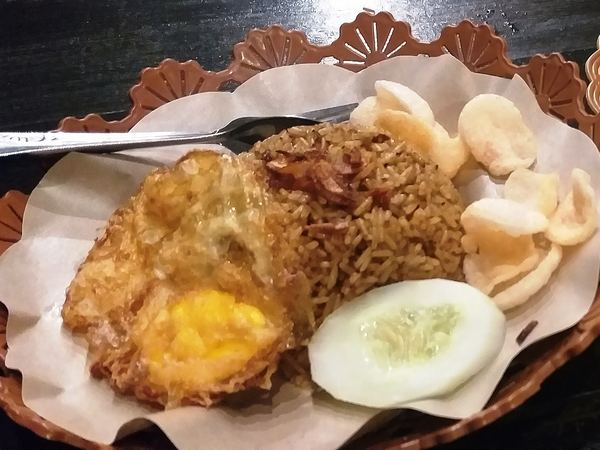
1
Seluruh Indonesia
Nasi Goreng
Penyelamat nasi sisa semalam. Hampir tiap rumah punya versinya sendiri, dan tidak ada dua yang benar-benar sama.
Diajarkan di Kelas Masakan Rumahan →Beranda Menu Favorit
Referensi menuDari yang dimasak ibu tiap minggu sampai yang cuma dibeli waktu lewat gerobaknya. Tiap menu ditulis lengkap dengan asal daerah, tingkat kesulitan, dan apakah masuk akal dimasak sendiri di rumah.
Urutan 1–12 di halaman ini adalah pilihan redaksi Dapur Rina berdasarkan menu yang paling sering ditanyakan murid — bukan hasil survei, jadi jangan dibaca sebagai peringkat resmi.

1Penyelamat nasi sisa semalam. Hampir tiap rumah punya versinya sendiri, dan tidak ada dua yang benar-benar sama.
Diajarkan di Kelas Masakan Rumahan →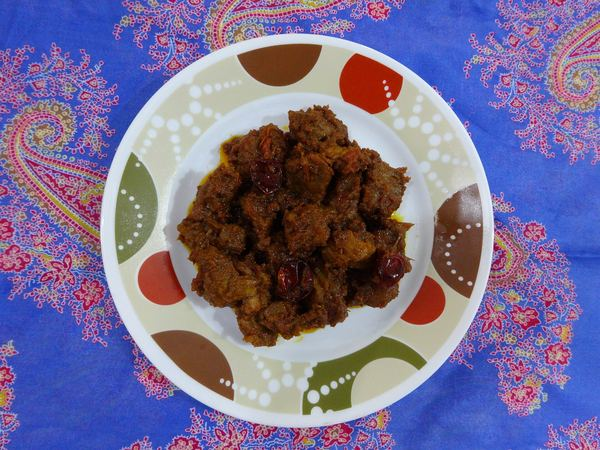
2Diaduk berjam-jam sampai santannya menyusut dan menghitam. Bukan masakan buru-buru — ini masakan yang menguji kesabaran.
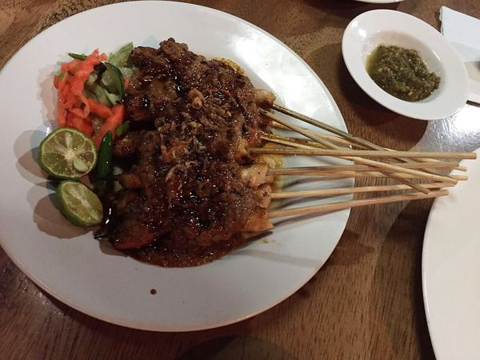
3Yang bikin repot bukan menusuknya, tapi menjaga bara tetap stabil. Bumbu kacangnya sendiri jauh lebih gampang dari dugaan orang.
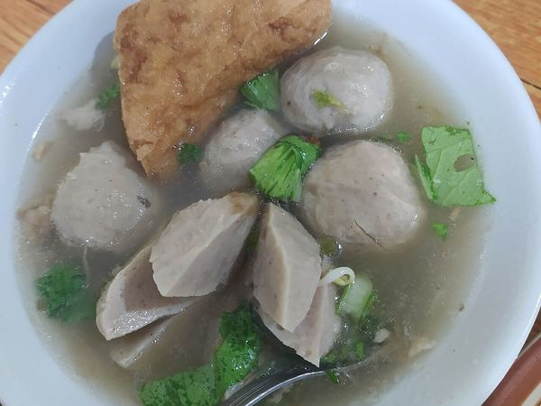
4Menu hujan-hujan yang tidak pernah salah. Kuncinya di kaldu yang direbus lama, bukan di bumbu yang banyak.
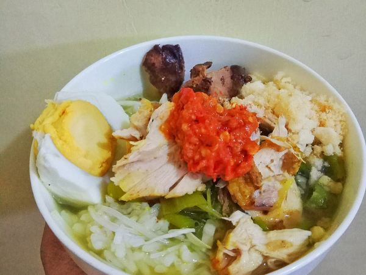
5Tiap daerah mengaku punya versi paling benar. Yang jelas, kuah kuningnya jadi obat waktu badan kurang enak.
Diajarkan di Kelas Masakan Rumahan →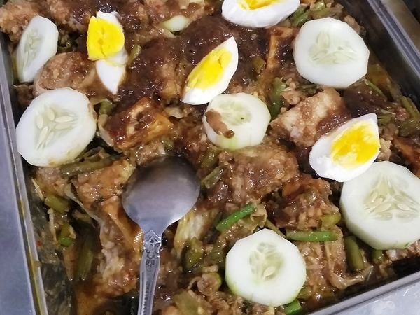
6Salad versi Indonesia: sayur rebus disiram saus kacang. Menu paling ramah buat yang lagi mengurangi gorengan.
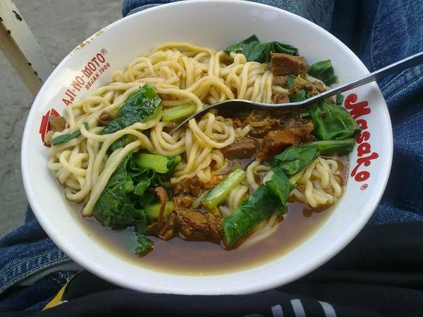
7Makan siang sejuta umat. Rahasianya ada di minyak ayam dan kecap yang diaduk duluan di dasar mangkuk.
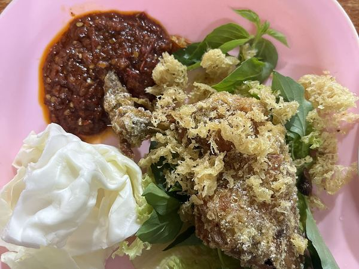
8Ayamnya diungkep dulu sampai bumbu masuk, kremesnya dari sisa air ungkepan. Tidak ada yang terbuang.
Diajarkan di Kelas Lauk & Sambal →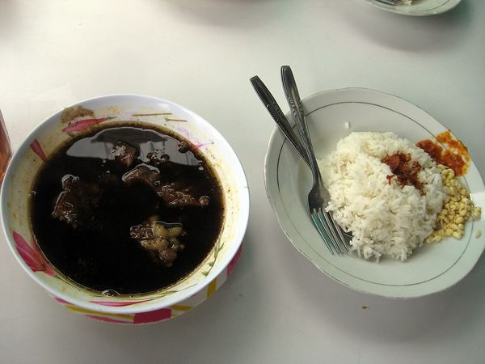
9Kuahnya hitam karena kluwek, bukan karena gosong. Satu-satunya sup di daftar ini yang warnanya bikin orang asing ragu.
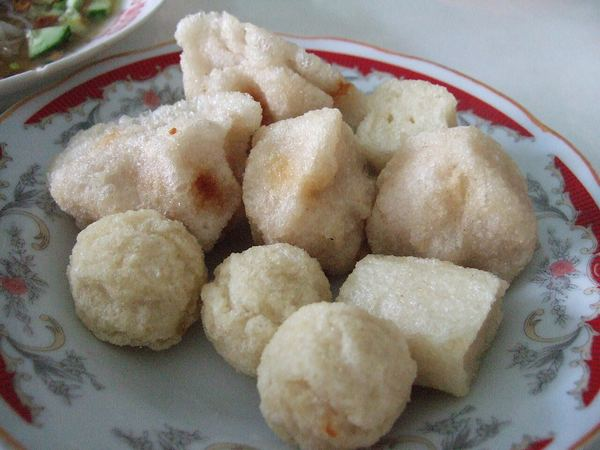
10Adonan ikan dan sagu yang dimakan dengan cuko asam pedas. Cukonya justru yang paling menentukan enak atau tidaknya.
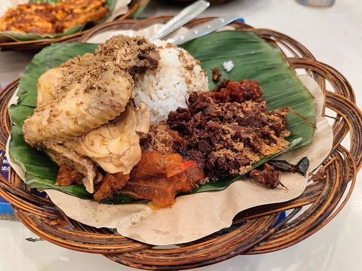
11Nangka muda dimasak semalaman sampai manis dan cokelat pekat. Masakan paling sabar di seluruh daftar ini.
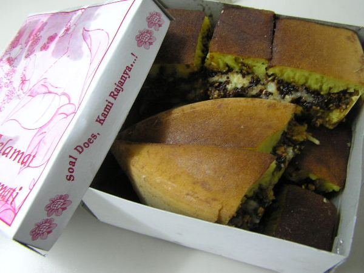
12Di sebagian daerah namanya terang bulan. Menu penutup malam minggu yang porsinya tidak pernah masuk akal untuk satu orang.
Sepupunya diajarkan di Kelas Kue & Jajan Pasar →Dari 12 menu di atas, tidak semuanya sepadan dibuat sendiri. Ini pembagian jujurnya.
Nasi goreng, soto ayam, ayam goreng kremes, dan sambal-sambalnya. Dimulai dari nol, jadi tidak perlu punya pengalaman apa pun dulu.
Daftar Kelas